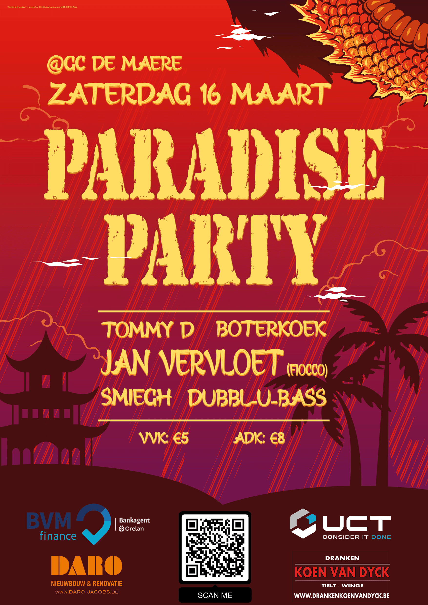

Chayenne Leys
Hallo! Ik zal mezelf even kort voorstellen. Ik ben Chayenne, ondertussen al 24 jaar oud en afkomstig uit regio Leuven. Na een bachelor marketing wilde ik mijn skills in digital branding nog uitbreiden. Daarom ben ik begonnen aan een graduaat in de digitale vormgeving. Naast school ga ik wekelijks badmintonnen en doe ik Braziliaanse Jiu-Jitsu.
Opdrachten WPL 1
Opdrachten WPL 2
Terwijl WPL 1 een zoektocht was naar jezelf gingen we tijdens WPL 2 aan de slag met ons eigen project. Wij kregen de case van artisanale diepvriespasta.
Maar wat is nu eigenlijk 'artisanale diepvriespasta'? Dat vroegen wij ons vier maand geleden ook af.
Ondertussen hebben we Busta 'uit de grond gestampt' (niet letterlijk natuurlijk, het is allemaal fictief). Simpelweg is Busta een bedrijf dat pasta verkoopt. Nu vraag je je misschien af 'Wat is daar zo speciaal aan?'.
Stel u voor: Je bent kok in een restaurant en je moet elke avond inschatten hoeveel klanten pasta willen eten.
Of je ben een kotstudent en je hebt geen tijd, inspiratie of geen skills om te koken.
Daarvoor is Busta! Wij bieden tal van inspiratie voor professionele en niet zo professionele koks aan om te werken met onze makkelijk doseerbare invriesbare verse pasta's.
En we bieden ook saus en rijst aan.
Opdrachten WPL 3
Opdrachten WPL 4
Mijn werk
Promomateriaal Chirofuif
De paradise Party is een van de jaarlijkse evenementen van Chiro Esjeewee. In 2023 en 2024 mocht ik al het promomateriaal voor deze fuif maken. Dat ging van een flyer en affiche naar de visuals voor de posts op sociale media, naar de bandjes voor de bezoekers van de fuif.
Re-branding DJ Mitro
DJ Mitro, een vriend van mij, wilde in 2020 zijn branding volledig omgooien. En ik heb hem daarbij geholpen. We hebben een nieuw logo gemaakt, fotoshoot gehouden, een videoclip en een korte docu gemaakt en een cover gemaakt voor een van zijn nieuwe nummers, 'grooving to the baseline'. Beluister het hier!
Aandenkens Chirokamp
Vanaf het jaar 2019 tot het jaar 2023 heb ik verschillende emblemen gemaakt voor Chiro Esjeewee. Dat waren voornamelijk aandenkens voor kampen. Daarnaast heb ik ook het ontwerp gemaakt voor de leidingspull die sinds 2019 wordt gedragen.